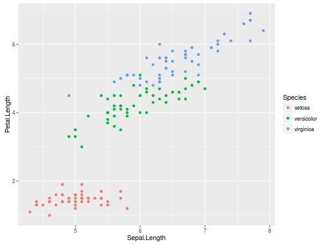
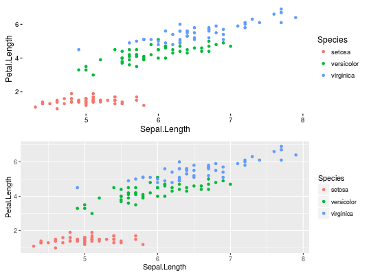

Tools for Storing, Restoring and Searching for R Objects
# Intro #This is the replication script for 'archivist: An R Package for Managing, Recording and Restoring Data Analysis Results' (Przemyslaw Biecek, Marcin Kosinski) submitted to JSS. #First, make sure that `archivist` is installed. if (!require(archivist)) { install.packages("archivist") library(archivist) } # Section 2.1 # Creation of hooks to R objects. # Following lines download R objects from remote repository. archivist::aread("pbiecek/graphGallery/f05f0ed0662fe01850ec1b928830ef32") archivist::aread("pbiecek/graphGallery/f05f0ed066")
setLocalRepo(system.file("graphGallery", package = "archivist")) aread("f05f0ed0662fe01850ec1b928830ef32")
# regression model model <- archivist::aread("2a6e492cb6982f230e48cf46023e2e4f") summary(model)Call: lm(formula = Petal.Length ~ Sepal.Length + Species, data = iris) Residuals: Min 1Q Median 3Q Max -0.76390 -0.17875 0.00716 0.17461 0.79954 Coefficients: Estimate Std. Error t value Pr(>|t|) (Intercept) -1.70234 0.23013 -7.397 1.01e-11 *** Sepal.Length 0.63211 0.04527 13.962 < 2e-16 *** Speciesversicolor 2.21014 0.07047 31.362 < 2e-16 *** Speciesvirginica 3.09000 0.09123 33.870 < 2e-16 *** --- Signif. codes: 0 ‘***’ 0.001 ‘**’ 0.01 ‘*’ 0.05 ‘.’ 0.1 ‘ ’ 1 Residual standard error: 0.2826 on 146 degrees of freedom Multiple R-squared: 0.9749, Adjusted R-squared: 0.9744 F-statistic: 1890 on 3 and 146 DF, p-value: < 2.2e-16# Section 2.2 # Retrieval of a list of R objects with given tags. # Following lines search within remote repositories and download objects with given properties. models <- asearch("pbiecek/graphGallery", patterns = c("class:lm", "coefname:Sepal.Length")) lapply(models, coef)$`18a98048f0584469483afb65294ce3ed` (Intercept) Sepal.Length -7.101443 1.858433 $`2a6e492cb6982f230e48cf46023e2e4f` (Intercept) Sepal.Length Speciesversicolor Speciesvirginica -1.7023422 0.6321099 2.2101378 3.0900021plots <- asearch("pbiecek/graphGallery", patterns = c("class:gg", "labelx:Sepal.Length")) length(plots)[1] 2library("gridExtra")Attaching package: ‘gridExtra’ The following object is masked from ‘package:dplyr’: combinedo.call(grid.arrange, plots)
# from local plots <- asearch(patterns = c("class:gg", "labelx:Sepal.Length")) length(plots)[1] 2do.call(grid.arrange, plots)
# Section 2.3 # Retrieval of the object's pedigree. library("archivist") library("dplyr") createLocalRepo("arepo", default = TRUE)Directory arepo did not exist. Forced to create a new directory.data(iris) iris %a% filter(Sepal.Length < 6) %a% lm(Petal.Length~Species, data=.) %a% summary() -> tmp ahistory(tmp)[e248b6a8852a4ecc3ceca0ba06f2073d]ahistory(md5hash = "050e41ec3bc40b3004bc6bdd356acae7")[050e41ec3bc40b3004bc6bdd356acae7]# this is not always this hash #Session info sinfo <- asession("050e41ec3bc40b3004bc6bdd356acae7")Warning message: No session info archived for 050e41ec3bc40b3004bc6bdd356acae7head(sinfo$packages)Error in sinfo$packages: $ operator is invalid for atomic vectors# Section 3.1 # Repository management. # Creation of a new empty repository. # local path repo <- "arepo" createLocalRepo(repoDir = repo) # Deletion of an existing repository repo <- "arepo" deleteLocalRepo(repoDir = repo, deleteRoot = TRUE) # Copying artifacts from other repositories. repo <- "arepo" createLocalRepo(repoDir = repo, default = TRUE)Directory arepo did not exist. Forced to create a new directory.copyRemoteRepo(repoTo = repo, md5hashes= "f05f0ed0662fe01850ec1b928830ef32", user = "pbiecek", repo = "graphGallery", repoType = "github") # Showing repository statistics showLocalRepo(repoDir = repo, method = "tags")artifact tag createdDate 1 f05f0ed0662fe01850ec1b928830ef32 format:rda 2016-03-04 20:00:45 2 f05f0ed0662fe01850ec1b928830ef32 name:pl1 2016-03-04 20:00:45 3 f05f0ed0662fe01850ec1b928830ef32 class:gg 2016-03-04 20:00:45 4 f05f0ed0662fe01850ec1b928830ef32 class:ggplot 2016-03-04 20:00:45 5 f05f0ed0662fe01850ec1b928830ef32 labelx:Sepal.Length 2016-03-04 20:00:45 6 f05f0ed0662fe01850ec1b928830ef32 labely:Petal.Length 2016-03-04 20:00:45 7 f05f0ed0662fe01850ec1b928830ef32 date:2016-03-04 20:00:45 2016-03-04 20:00:45 8 f05f0ed0662fe01850ec1b928830ef32 session_info:c77057faf5d26bc12c402b2a78a23fb7 2016-03-04 20:00:45 9 f05f0ed0662fe01850ec1b928830ef32 format:png 2016-03-04 20:00:45summaryRemoteRepo(user="pbiecek", repo="graphGallery")Number of archived artifacts in Repository: 53 Number of archived datasets in Repository: 24 Number of various classes archived in Repository: Number ggplot 6 tbl_df 3 grouped_df 3 area 1 proto 1 lm 9 numeric 2 list 3 summary.lm 4 data.frame 16 matrix 1 igraph 1 communities 1 character 1 table 1 intsvy.mean 2 intsvy.table 2 intsvy.reg 1 gg 2 Saves per day in Repository: Saves 2014-08-21 4 2014-09-03 11 2015-06-22 4 2015-06-24 16 2015-06-25 17 2015-06-27 1 2015-06-28 4 2015-06-29 4 2015-06-30 4 2015-07-01 4 2015-07-09 4 2015-07-10 5 2015-07-15 1 2015-07-16 3 2015-07-20 2 2015-08-12 3 2015-08-25 3 2015-08-29 1 2015-09-12 4 2015-09-14 4 2015-09-20 2 2015-09-22 1 2015-10-08 2 2015-10-12 1 2015-11-15 3 2015-11-27 4 2015-11-30 11 2016-02-07 2 2016-02-09 3 2016-03-04 4# Setting default repository setRemoteRepo(user = "pbiecek", repo = "graphGallery") # Section 3.2 # Artifact management # Saving an R object into a repository library("ggplot2") repo <- "arepo" pl <- qplot(Sepal.Length, Petal.Length, data = iris) saveToLocalRepo(pl, repoDir = repo)[1] "b656dbc388dfb041d32efe81f36bcddd" attr(,"data") [1] "ff575c261c949d073b2895b05d1097c3"showLocalRepo(repoDir = repo, "tags")artifact tag createdDate 1 f05f0ed0662fe01850ec1b928830ef32 format:rda 2016-03-04 20:00:45 2 f05f0ed0662fe01850ec1b928830ef32 name:pl1 2016-03-04 20:00:45 3 f05f0ed0662fe01850ec1b928830ef32 class:gg 2016-03-04 20:00:45 4 f05f0ed0662fe01850ec1b928830ef32 class:ggplot 2016-03-04 20:00:45 5 f05f0ed0662fe01850ec1b928830ef32 labelx:Sepal.Length 2016-03-04 20:00:45 6 f05f0ed0662fe01850ec1b928830ef32 labely:Petal.Length 2016-03-04 20:00:45 7 f05f0ed0662fe01850ec1b928830ef32 date:2016-03-04 20:00:45 2016-03-04 20:00:45 8 f05f0ed0662fe01850ec1b928830ef32 session_info:c77057faf5d26bc12c402b2a78a23fb7 2016-03-04 20:00:45 9 f05f0ed0662fe01850ec1b928830ef32 format:png 2016-03-04 20:00:45 10 b656dbc388dfb041d32efe81f36bcddd format:rda 2016-07-27 15:25:21 11 b656dbc388dfb041d32efe81f36bcddd name:pl 2016-07-27 15:25:21 12 b656dbc388dfb041d32efe81f36bcddd class:gg 2016-07-27 15:25:21 13 b656dbc388dfb041d32efe81f36bcddd class:ggplot 2016-07-27 15:25:21 14 b656dbc388dfb041d32efe81f36bcddd labelx:Sepal.Length 2016-07-27 15:25:21 15 b656dbc388dfb041d32efe81f36bcddd labely:Petal.Length 2016-07-27 15:25:21 16 b656dbc388dfb041d32efe81f36bcddd date:2016-07-27 15:25:21 2016-07-27 15:25:21 17 b9c0058fc395bea980540e732f2b4fd1 format:rda 2016-07-27 15:25:21 18 b656dbc388dfb041d32efe81f36bcddd session_info:b9c0058fc395bea980540e732f2b4fd1 2016-07-27 15:25:21 19 ff575c261c949d073b2895b05d1097c3 format:rda 2016-07-27 15:25:21 20 ff575c261c949d073b2895b05d1097c3 format:txt 2016-07-27 15:25:21 21 ff575c261c949d073b2895b05d1097c3 relationWith:b656dbc388dfb041d32efe81f36bcddd 2016-07-27 15:25:21 22 b656dbc388dfb041d32efe81f36bcddd format:png 2016-07-27 15:25:21#deleteLocalRepo("arepo", deleteRoot = TRUE) # Serialization of an object creation event into repository library("dplyr") iris %a% filter(Sepal.Length < 6) %a% lm(Petal.Length~Species, data=.) %a% summary() -> tmp ahistory(tmp)iris %a% filter(Sepal.Length < 6) %a% lm(Petal.Length ~ Species, data = .) [817057e6c60fea315d23660a66041ffc] -> summary() [5aac8e438ab6f48d0ef5c8c5addb3f0b]ahistory(md5hash = "050e41ec3bc40b3004bc6bdd356acae7")[050e41ec3bc40b3004bc6bdd356acae7]# Loading an object from repository pl2 <- loadFromRemoteRepo("f05f0ed0662fe01850ec1b928830ef32", repo="graphGallery", user="pbiecek", value=TRUE) pl3 <- loadFromLocalRepo("f05f0ed0662", system.file("graphGallery", package = "archivist"), value=TRUE) archivist::aread("pbiecek/graphGallery/f05f0ed0662fe01850ec1b928830ef32")
setLocalRepo(system.file("graphGallery", package = "archivist")) pl3 <- loadFromLocalRepo("f05f0ed", value=TRUE) archivist::aread("f05f0ed")
setLocalRepo(system.file("graphGallery", package = "archivist")) model <- aread("2a6e492cb6982f230e48cf46023e2e4f") digest::digest(model)[1] "2a6e492cb6982f230e48cf46023e2e4f"# Removal of an object from repository rmFromLocalRepo("f05f0ed0662fe01850ec1b928830ef32", repoDir = repo) #Remove all older than 30 days obj2rm <- searchInLocalRepo(list(dateFrom = "2010-01-01", dateTo = Sys.Date()), repoDir = repo) rmFromLocalRepo(obj2rm, repoDir = repo, many = TRUE) # Search for an artifact # Search in a local/GitHub repository searchInLocalRepo(pattern = "class:gg", repoDir = system.file("graphGallery", package = "archivist"))[1] "f05f0ed0662fe01850ec1b928830ef32" "13b2724139eb2c62578b4dab0d7b2cea"searchInLocalRepo(pattern = list(dateFrom = "2016-01-01", dateTo = "2016-02-07" ), repoDir = system.file("graphGallery", package = "archivist"))[1] "d9313a0de3e2980201a8971e3384ff26" "ff575c261c949d073b2895b05d1097c3" "2a6e492cb6982f230e48cf46023e2e4f" [4] "93ecfdf1436932e2860c6dbdf2abc2ad" "afb2550d0f886f0cf3b050f04c5cd4f8"searchInLocalRepo(pattern=c("class:gg", "labelx:Sepal.Length"), repoDir = system.file("graphGallery", package = "archivist"))[1] "13b2724139eb2c62578b4dab0d7b2cea" "f05f0ed0662fe01850ec1b928830ef32"